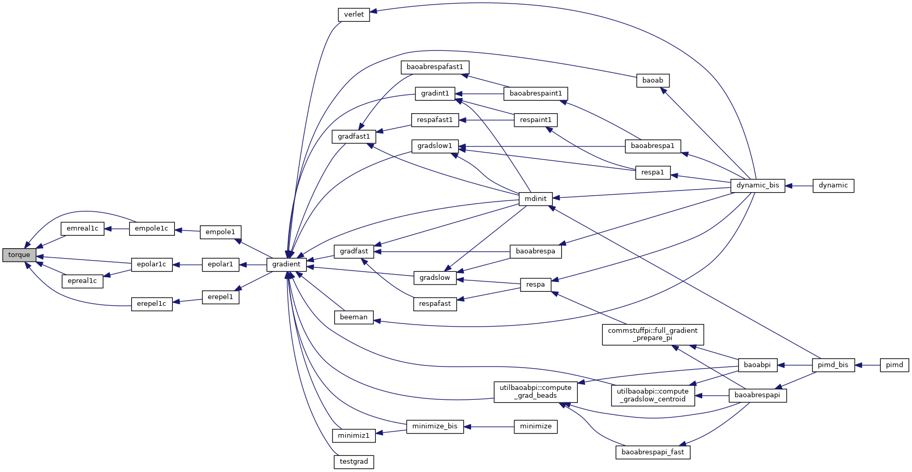
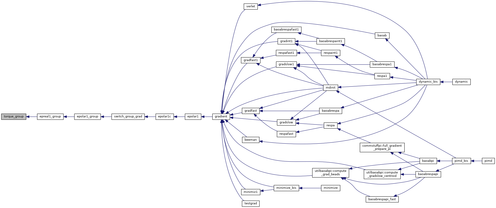
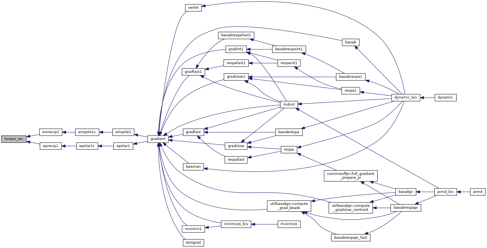

|
Tinker-HP v1.3
|
|
Tinker-HP v1.3
|
Go to the source code of this file.
Functions/Subroutines | |
| subroutine | torque (i, trq, frcx, frcy, frcz, de) |
| compute torque contribution on atomistic site More... | |
| subroutine | torque_rec (i, trq, frcx, frcy, frcz, de) |
| compute torque contribution on atomistic site, reciprocal space More... | |
| subroutine | torque_group (i, trq, frcx, frcy, frcz, de) |
| compute torque contribution on atomistic site, groups More... | |
| subroutine torque | ( | integer | i, |
| real*8, dimension(3) | trq, | ||
| real*8, dimension(3) | frcx, | ||
| real*8, dimension(3) | frcy, | ||
| real*8, dimension(3) | frcz, | ||
| real*8, dimension(3,*) | de | ||
| ) |
compute torque contribution on atomistic site
| [in] | i,: | atomic site |
| [in] | trq,: | 'torque' on the site |
| [in] | frcx,: | x-component of force contribution due to torque |
| [in] | frcy,: | y-component of force contribution due to torque |
| [in] | frcz,: | z-component of force contribution due to torque |
| [in] | de,: | overall array parameter |
Definition at line 14 of file torque.f90.
References image().
Referenced by empole1c(), emreal1c(), epolar1c(), epreal1c(), and erepel1c().

| subroutine torque_group | ( | integer | i, |
| real*8, dimension(3) | trq, | ||
| real*8, dimension(3) | frcx, | ||
| real*8, dimension(3) | frcy, | ||
| real*8, dimension(3) | frcz, | ||
| real*8, dimension(3,natgroup) | de | ||
| ) |
compute torque contribution on atomistic site, groups
| [in] | i,: | atomic site |
| [in] | trq,: | 'torque' on the site |
| [in] | frcx,: | x-component of force contribution due to torque |
| [in] | frcy,: | y-component of force contribution due to torque |
| [in] | frcz,: | z-component of force contribution due to torque |
| [in] | de,: | overall array parameter |
Definition at line 808 of file torque.f90.
References image().
Referenced by epreal1_group().

| subroutine torque_rec | ( | integer | i, |
| real*8, dimension(3) | trq, | ||
| real*8, dimension(3) | frcx, | ||
| real*8, dimension(3) | frcy, | ||
| real*8, dimension(3) | frcz, | ||
| real*8, dimension(3,*) | de | ||
| ) |
compute torque contribution on atomistic site, reciprocal space
| [in] | i,: | atomic site |
| [in] | trq,: | 'torque' on the site |
| [in] | frcx,: | x-component of force contribution due to torque |
| [in] | frcy,: | y-component of force contribution due to torque |
| [in] | frcz,: | z-component of force contribution due to torque |
| [in] | de,: | overall array parameter |
Definition at line 407 of file torque.f90.
References image().
Referenced by emrecip1(), and eprecip1().

 1.8.5
1.8.5